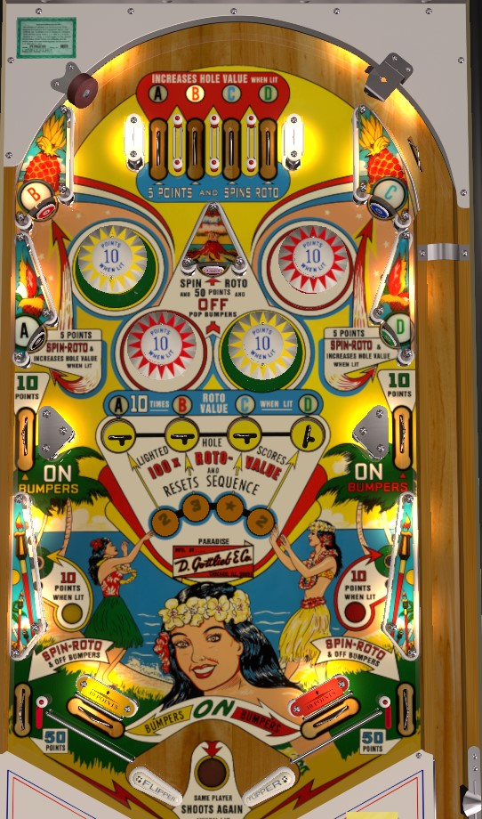

Paradise is the replay version. Pleasure Isle and Hawaiian Isle are add-a-ball versions. Differences between them are discussed as relevant throughout the guide.
Hit lit top lanes or standup targets to collect A-B-C-D in order. Collected A-B-C-D letters light up the four saucers in the center of the playfield, which feed each other from left to right. Playfield inserts show the value of each saucer, which is changed by an under-playfield roto-wheel. All rollover lanes and standup targets except for the in lanes spin the roto-wheel. Saucers can have a value of 2, 3, 4, 5, or Star. Star has a value of 1 point but always awards an extra ball. Saucers corresponding with a collected letter score 10x the displayed roto-value. If A-B-C-D has been completed, one of the saucers themselves will be lit, rotating based on 1-point switch hits; making a lit saucer scores 100x the roto-value and resets the A-B-C-D sequence. The status of the A-B-C-D sequence is preserved across players, balls, and games. On Pleasure Isle and Hawaiian Isle, simply lighting the D to complete the A-B-C-D sequence also awards an extra ball.
Bumpers score 1 point or 10 when lit. The left side lane and in lane light the yellow bumpers and left slingshot for 10 points instead of 1. The right side lane and in lane do the same for the red bumpers and right slingshot. Draining the ball unlights all bumpers and slingshots unless an extra ball has been earned. The center standup target and out lanes score 50 points and spin the roto-wheel in addition to turning off the bumpers.
On Paradise, there is a maximum of 1 extra ball per ball in play and the max score displayable is 1,999. On Pleasure Isle and Hawaiian Isle, up to 5 extra balls can be stored at any one time, and the max score displayable is 9,999. Tilt ends the current ball, not a player's whole game.
The below picture is of Paradise, which was taken from the VPX recreation by JPSalas.
